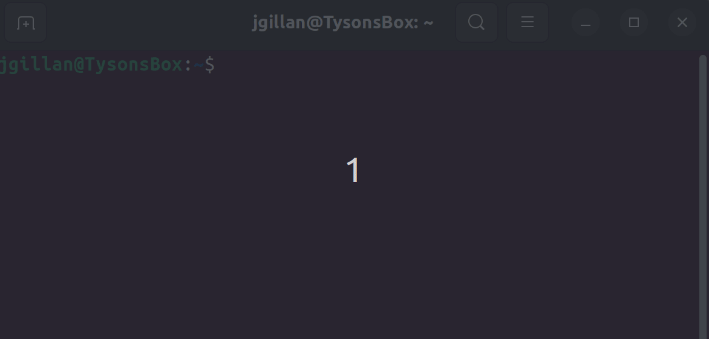
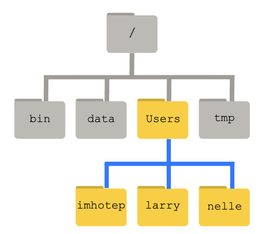

How to Talk to Computers¶
The Command Line Interface¶
When using a computer, it is typical to use a keyboard and mouse to navigate a cursor across the screen or simply tap on the screens of our smart phones or tablets. Both of these methods make use of the Graphical User Interface (GUI) and have become central to the way we interact with computers. GUIs make computers so easy to use!
However, for a more direct and powerful way to instruct your computer, you should learn to use the Command Line Interface (CLI). CLIs are found throughout all operating systems (Windows, MacOS, Linux) though they might have different commands and syntax.
For this FOSS lesson on CLI, we will focus on the Unix CLI which is present in MacOS and all Linux operating systems.
Attention Windows users
Much of what we are going to be teaching is based on open-source software which operates on cloud and is incompatible with Windows OS.
Unix-based systems such as Linux Ubuntu and MacOS X, as many scientific tools require a Unix Operating System (OS).
There are a number of software that allow Windows users to execute Unix commands, however we recommend the use of Windows Subsystem for Linux (WSL) 2.0.
Quickstart installation of Window's WSL
A system reboot is necessary
- Open PowerShell in Administrator mode (open Search and look for PowerShell, right click and select "Run as Administrator")
- type
wsl --install - Restart your machine
- Open Search and open WSL; create a username and password, wait for it to finish setting up (should take a few minutes)
- You're now ready to use Linux on your Windows Machine!
Where is the WSL Home folder?
The Home folders for Linux and Windows are different. The Windows path to the WSL home folder is \\wsl$\Ubuntu\home\<username>.
We suggest creating a bookmark in your Windows machine to allow quicker access to the Linux partition (for quicker access to files).
To quickly open the folder, open WSL and execute explorer.exe .. This will open a folder in Windows at the Linux Home folder.
The Unix Shell¶
The CLI sees the computer stripped down to only a Terminal from where one can run powerful commands executed through the Shell.
Though there are technical differences between them, the terms Command Line Interface, Terminal, Shell, and BASH will be used more or less interchangeably throughout the lesson.

Quick video on the shell.
Accessing a Linux Shell on CyVerse¶
In addition to sharing code and documentation, Github is also a place to do direct computing. Using Github Codespaces we can access a Linux virtual machine and do computing tasks directly from a Github repository.
Steps to Launch the CLI on CyVerse¶
-
Navigate to the CyVerse Discovery Environment: https://de.cyverse.org/
You may need to first log in into the User Portal if this is your first time logging onto CyVerse.
-
On the left hand side, click the CloudShell button.
-
Your Terminal should be available within a few seconds.
Introductory Shell Commands¶
The following tutorial material was taken from the Carpentries' Shell Module.
Download Some Data from the Carpentries
To follow along with the tutorial, please download and unzip this data. shell-lesson-data.zip
The Command Line Way to Download and Unzip!
Execute the following commands:
$ wget https://swcarpentry.github.io/shell-novice/data/shell-lesson-data.zip
$ unzip shell-lesson-data.zip
Navigation¶

| Command | Explanation |
|---|---|
pwd |
print working directory |
ls |
list content of folder |
cd |
change directory |
By typing pwd, the current working directory is printed.
$ pwd
/home/jovyan/data-store
We can then use ls to see the contents of the current directory.
$ ls
shell-lesson-data/ shell-lesson-data.zip*
Command Flags
Each command has flags, or options that you can specify. which are summoned with a -, such as <command> -<flag>.
$ ls -a -l -h
-
The above command calls for the
-a(all),-l(long),-h(human readable) flags. This causeslsto output a list of all files (inculding hidden files/folders) with human readable file size (e.g., it will list 3MB instead of 3000000), permissions, creator, and date of creation. -
If you do not know what flags are available, you can refer to the
mancommand (or for many tools, use the-h(help) flag).
We can then move inside the folder of our choice doing cd. Doing ls following the opening of the folder of choice, will show the contents of the folder you just moved in. Feel free to explore the contents of the folders by using cd and ls.
$ cd shell-lesson-data
$ ls
exercise-data/ north-pacific-gyre/
$ ls exercise-data/
animal-counts/ creatures/ numbers.txt* proteins/ writing/
Tips for Directory Navigation
. refers to current directory
.. refers to above directory
/ is the directory separator
~ indicates the home directory
For example:
$ ls . # lists files and folders in the current directory
$ ls .. # lists files and folders in the above directory
$ ls ~ # lists files and folders in the home directory
$ ls ~/Documents # lists files and folders in Documents (a folder present in the home directory)
Use the Tab key to autocomplete
You do not need to type the entire name of a folder or file. By using the tab key, the Shell will autocomplete the name of the files or folders. For example, typing the following
$ ls exer
and pressing the tab key, will result in autocompletion.
$ ls exercise-data/
You can then press tab twice, to print a list of the contents of the folder.
$ ls exercise-data/
animal-counts/ creatures/ numbers.txt proteins/ writing/
Working with Files and Directories¶
| Command | Explanation |
|---|---|
mkdir |
make a directory |
touch |
creat empty file |
nano or vim |
text editors |
mv |
move command |
cp |
copy command |
rm |
remove command |
Help with Commands
For every command, typing man (manual) before the command, will open the manual for said command.
$ man ls
- The above command will result in opening the manual for the
lscommand. You can exit the man page by pressingq.
Return to shell-lesson-data, and create a directory with mkdir <name of folder>.
$ mkdir my_folder
$ ls
exercise-data/ my_folder/ north-pacific-gyre/
Notice the new my_folder directory.
Naming your files
It is strongly suggested that you avoid using spaces when naming your files. When using the Shell to communicate with your machine, a space can cause errors when loading or transferring files. Instead, use dashes (-), underscores (_), periods (.) and CamelCase when naming your files.
Acceptable naming:
$ mkdir my_personal_folder
$ mkdir my_personal-folder
$ mkdir MyPersonal.Folder
What will happen if you create a directory with spaces?
You will obtain as many folders as typed words!
$ mkdir my folder
$ ls -F
exercise-data/ folder/ my/ north-pacific-gyre/
my and folder.
Create an empty file with touch <name of file>
$ touch new_file.txt
touch will create an empty file
Add text to the new file
nano new_file.txt
Use mv <name of file or folder you want to move> <name of destination folder> to move your newly created file to the directory you created previously (you can then use ls to check if you successully moved the file).
$ ls
exercise-data/ new_file* my_folder/ north-pacific-gyre/
$ mv new_file.txt my_folder/
$ ls
exercise-data/ my_folder/ north-pacific-gyre/
$ ls my_folder/
new_file.txt*
mv can also be used to rename a file or folder with mv <name of file or folder you want to change> <new name>.
$ cd my_folder/
$ mv new_file my_file
$ ls
my_file*
cp is the command to copy a file with the syntax cp <name of file you want to copy> <name of copy file>
$ cp my_file copy_my_file
$ ls
copy_my_file* my_file*
Copying folders
To copy folders and the content of these folders, you will have to use the -r flag (recursive) for cp in the following manner cp -r <name of folder you want to copy> <name of copy folder> (following example is from the shell-lesson-data/ directory).
$ cp -r my_folder/ copy_my_folder
$ ls
copy_my_folder/ exercise-data/ my_folder/ north-pacific-gyre/
$ ls my_folder/
copy_my_file* my_file*
$ ls copy_my_folder/
copy_my_file* my_file*
To remove an unwanted file, use rm <name of file to remove>.
$ rm copy_my_file
$ ls
my_file
Removing folders
Save as the "Copying Folders" note, you have to use the -r flag to remove a folder rm -r <name of folder you want to remove> (following example is from the shell-lesson-data/ directory).
$ rm -r copy_my_folder/
$ ls -F
exercise-data/ my_folder/ north-pacific-gyre/
Shell Script¶
Here we are going to show an example command line automation using a shell script. This is what makes the command line powerful!
Shell Script
A shell script is a file with the extension '.sh'. It is essentially a text file that lists out multiple shell commands. When the shell script is run, the computer will run all of the commands in sequence in an automated way.
Navigate to the shell-lesson-data directory
$ cd shell-lesson-data
Create the shell script
$ nano script.sh
Script exercises
word counting
#!/bin/bash
# Find haiku.txt starting from current directory
file_path=$(find . -name "haiku.txt" | head -n 1)
# Navigate to its directory
cd "$(dirname "$file_path")"
# Print absolute path
echo "haiku.txt found at: $(pwd)/haiku.txt"
# Define keyword to search
keyword="not"
# Count how many times the keyword appears
keyword_count=$(grep -o "$keyword" haiku.txt | wc -l)
# Extract and append keyword context
echo "" >> haiku.txt
echo "---- Keyword Summary ----" >> haiku.txt
echo "Keyword '$keyword' appears $keyword_count times" >> haiku.txt
echo "Summary generated on: $(date)" >> haiku.txt
echo "--------------------------" >> haiku.txt
# Show updated file
cat haiku.txt
Create a compressed backup with a timestamp
#use Bash shell to run the following commands
#!/bin/bash
## Variables
#the directory you want to back up (e.g., shell-lesson-data)
SOURCE_DIR=$(find $PWD -type d -name "shell-lesson-data" 2>/dev/null)
#location where the backup will be stored
BACKUP_DIR="$PWD"
#used to create a unique name for each backup based on the current date and time
TIMESTAMP=$(date +"%Y-%m-%d_%H-%M-%S")
# name of the compressed backup file
ARCHIVE_NAME="backup_$TIMESTAMP.tar.gz"
# Create backup directory if it doesn't exist
mkdir -p "$BACKUP_DIR"
# Create a compressed archive of the source directory
tar -czf "$BACKUP_DIR/$ARCHIVE_NAME" -C "$SOURCE_DIR" .
# Output the result
echo "Backup of $SOURCE_DIR completed!"
echo "Archive created at $BACKUP_DIR/$ARCHIVE_NAME"
Exit nano with ctrl + x
Modify permission to make the shell script executable
$ chmod +x script.sh
Run the shell script
$ ./script.sh